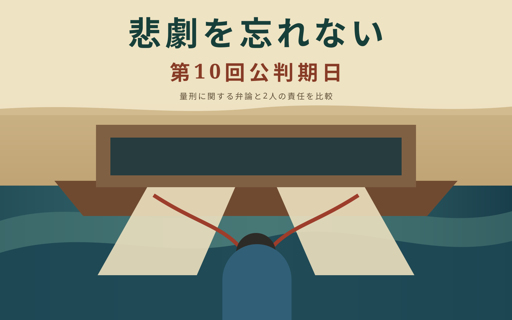

検察側と弁護側が、刑に関するそれぞれの主張を示しました。

傍聴記録・要約
第10回公判期日
量刑に関する弁論と、被告2人の責任を比較します。
この要約で確認できること
被告2人の量刑に関する立場を並べて確認できます。
再構成した完全傍聴記録は、繁体字・簡体字中国語で公開しています。
言語について：日本語の完全翻訳は現在公開していません。このページは日本語の経路、要約、画像を保ち、未確認の完全翻訳を公式記録として表示しないための要約ページです。

傍聴記録・要約
量刑に関する弁論と、被告2人の責任を比較します。
検察側と弁護側が、刑に関するそれぞれの主張を示しました。
被告2人の量刑に関する立場を並べて確認できます。
再構成した完全傍聴記録は、繁体字・簡体字中国語で公開しています。
言語について：日本語の完全翻訳は現在公開していません。このページは日本語の経路、要約、画像を保ち、未確認の完全翻訳を公式記録として表示しないための要約ページです。